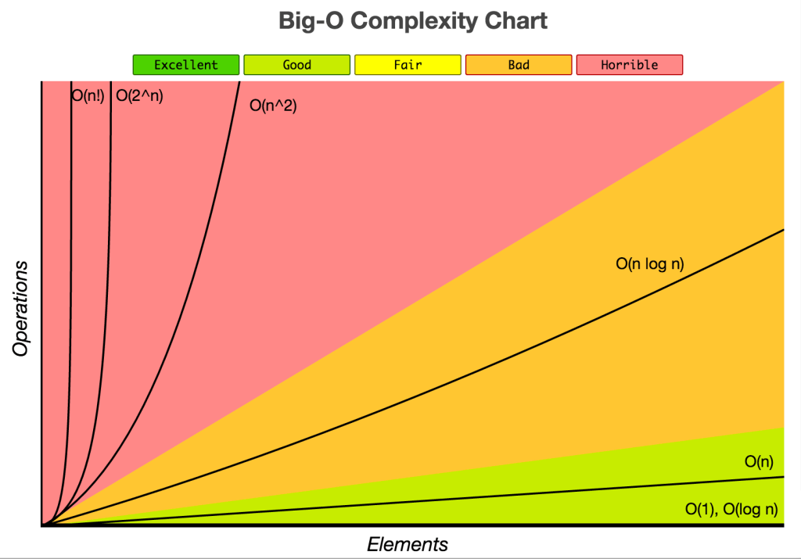
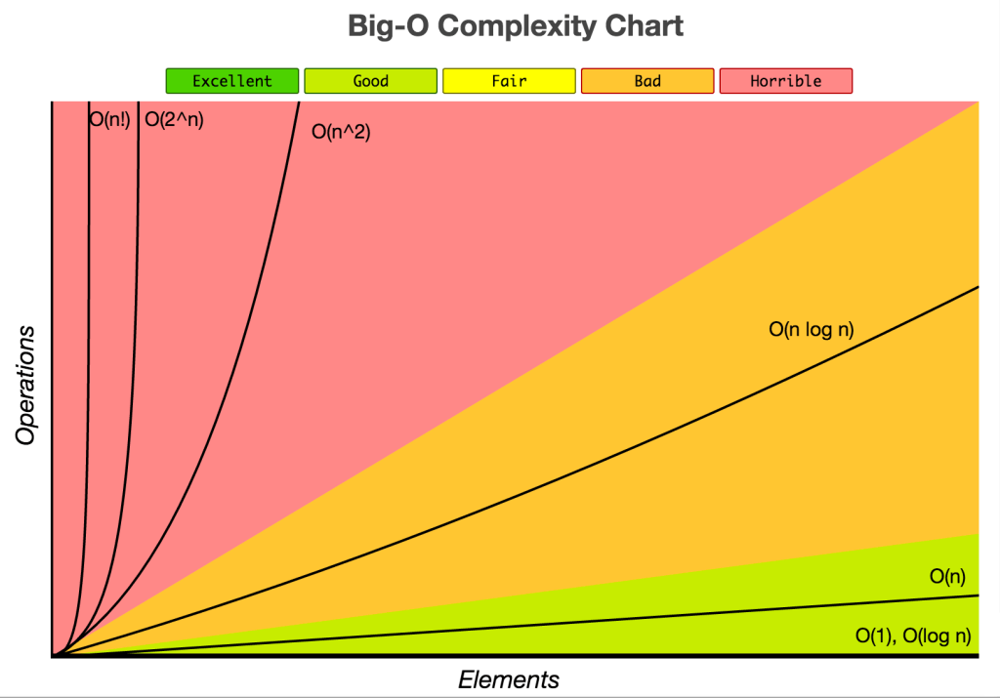

Sites for Readings
Big O References
 

The following are examples of common complexities and their Big O notations, ordered from fastest to slowest:
- Constant: O(1)
- Logarithmic: O(log(n))
- Linear: O(n)
- Log-linear: O(nlog(n))
- Quadratic: O(n2)
- Cubic: O(n3)
- Exponential: O(2n)
- Factorial: O(n!)
Sorting Algorithms
Bubble Sort
Switches each element left to right adjacent
Selection Sort
Selects i-th smallest element and places at i-th position. This algorithm divides the array into two parts: sorted (left) and unsorted (right) subarray. It selects the smallest element from unsorted subarray and places in the first position of that subarray (ascending order). It repeatedly selects the next smallest element.
Insertion Sort
A simple comparison based sorting algorithm. It inserts every array element into its proper position. In i-th iteration, previous (i-1) elements (i.e. subarray Arr[1:(i-1)]) are already sorted, and the i-th element (Arr[i]) is inserted into its proper place in the previously sorted subarray.
Merge Sort
A divide & conquer algorithm. Essentially breaks down an array in the middle to subarrays, and keeps breaking it down until its one element in an array. Then proceeds to build itself back up. Can be used as a sub-problem to a big problem: - Best to visualize as having pointers of i1 and i2 compare, if i1 < i2 push to new array.